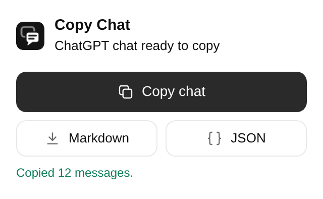

Copy the whole chat.
Every message from a ChatGPT or Claude conversation, as clean Markdown, in one click. Free and open source.
How do I undo my last git commit but keep the changes?
Use a soft reset. It moves the branch back one commit and keeps your changes staged:
git reset --soft HEAD~1To unstage them too, use --mixed:
git reset HEAD~1# Undo the last Git commit *ChatGPT · exported 2026-10-12 · [open chat](https://chatgpt.com/c/…)* ## User How do I undo my last git commit but keep the changes? ## ChatGPT Use a soft reset. It moves the branch back one commit and keeps your changes staged: ```bash git reset --soft HEAD~1 ``` To unstage them too, use `--mixed`: ```bash git reset HEAD~1 ```
Three ways to copy

- From the toolbar
- Click the Copy Chat icon, then Copy chat, Markdown or JSON.
- From the page
- Right-click anywhere in the chat and choose Copy chat as Markdown, or download it as Markdown or JSON.
- From the keyboard
-
Press Alt Shift C. Change the keys any time at
chrome://extensions/shortcuts.
What you get
- The full conversation
- Long chats come through in full, not just the part on screen.
- The version you're reading
- If you edited a message or regenerated a reply, the other versions stay out.
- Formatting intact
- Code blocks, tables, lists and math are kept as proper Markdown.
- Artifacts and canvases
- Claude artifacts and ChatGPT canvas documents, in their final version.
- Extras when you want them
- Switch on thinking steps, tool calls or the text of uploaded files.
- Pastes well anywhere
- Markdown for editors and notes, formatted text for Google Docs and Notion.
Your chats stay on your computer.
- No account, no server, no analytics, no tracking.
- It only works when you click, and only on the chat in front of you.
- Your login stays with ChatGPT and Claude. Nothing is stored.
- Open source under the MIT license, so anyone can check.
| Permission | Why |
|---|---|
| chatgpt.com, claude.ai | Read the chat you ask it to copy. It never changes the page. |
| Scripting | Work in chat tabs that were open before you installed it. |
| Context menus | Add the right-click items. |
| Storage | Remember your export settings. |
Roadmap
- ChatGPT and Claude
- Copy as Markdown, download as Markdown or JSON
- More AI platforms: Gemini, Grok, DeepSeek, Perplexity, Copilot, Le Chat and others
- Images in exports
- Bulk export of many chats into one zip
- Cleaner ChatGPT interactive layouts
- ChatGPT temporary chats
- PDF and HTML export
Install
-
Download the Chrome zip from the latest release and unzip it.
-
Open
chrome://extensionsand turn on Developer mode. -
Click Load unpacked and choose the unzipped folder. Then open any ChatGPT or Claude chat.
Works in Chrome, Edge, Brave and other Chromium browsers. A Firefox build is in the same release.